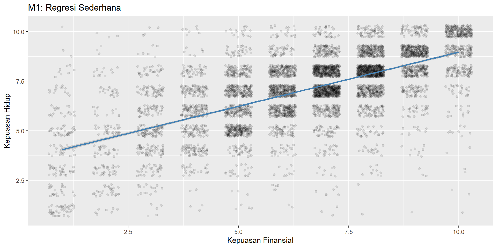
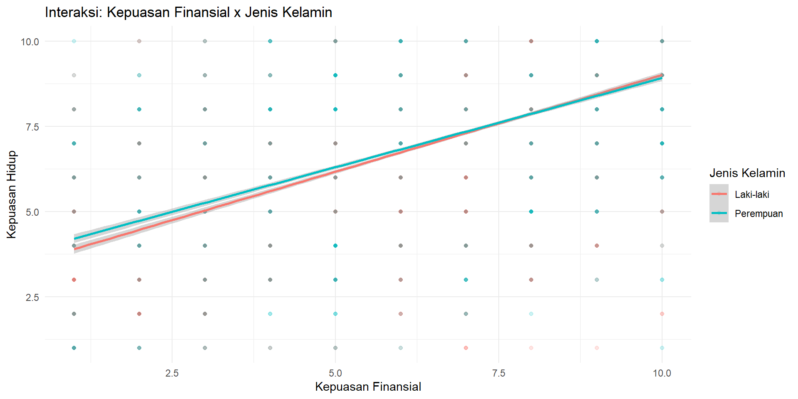
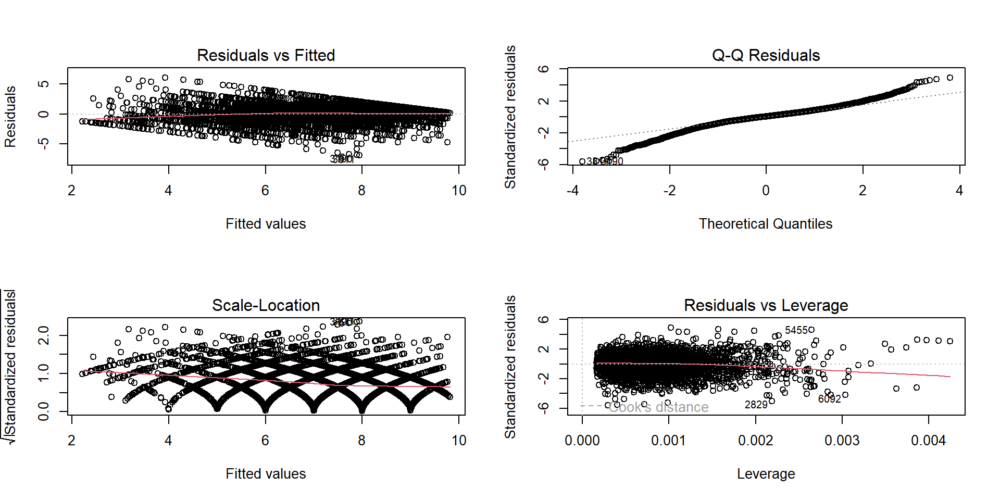

[1] 6922Bagian 1: Regresi Linear Sederhana
Bagian 2: Regresi Linear Berganda
Bagian 3: Variabel Kategorikal dan Pelaporan
\[Y = \beta_0 + \beta_1 X_1 + \beta_2 X_2 + \ldots + \beta_p X_p + \varepsilon\]
| Komponen | Simbol | Makna |
|---|---|---|
| Intercept | \(\beta_0\) | Nilai Y ketika semua X = 0 |
| Slope | \(\beta_k\) | Perubahan Y per kenaikan 1 unit \(X_k\) |
| Error | \(\varepsilon\) | Selisih prediksi dan aktual |
Tujuan OLS: Menemukan garis terbaik yang meminimalkan jumlah kuadrat error.
Di R: lm(Y ~ X1 + X2) — simbol ~ = “diprediksi oleh”, + = menambah prediktor.
[1] 0.6472145
Pearson's product-moment correlation
data: dat$kepuasan_finansial and dat$kepuasan_hidup
t = 70.627, df = 6920, p-value < 2.2e-16
alternative hypothesis: true correlation is not equal to 0
95 percent confidence interval:
0.6333125 0.6606990
sample estimates:
cor
0.6472145 # A tibble: 2 × 7
term estimate std.error statistic p.value conf.low conf.high
<chr> <dbl> <dbl> <dbl> <dbl> <dbl> <dbl>
1 (Intercept) 3.51 0.0535 65.7 0 3.41 3.62
2 kepuasan_finansial 0.545 0.00772 70.6 0 0.530 0.560# A tibble: 1 × 3
r.squared adj.r.squared AIC
<dbl> <dbl> <dbl>
1 0.419 0.419 24222.\(R^2\) = proporsi varians Y yang dijelaskan model (0–1). \(R^2_{adj}\) disesuaikan jumlah prediktor.

# A tibble: 3 × 7
term estimate std.error statistic p.value conf.low conf.high
<chr> <dbl> <dbl> <dbl> <dbl> <dbl> <dbl>
1 (Intercept) 1.71 0.0648 26.3 8.78e-146 1.58 1.83
2 kepuasan_finansial 0.388 0.00788 49.2 0 0.373 0.404
3 kebebasan_memilih 0.388 0.00940 41.3 0 0.370 0.407Important
Setiap koefisien diinterpretasikan “dengan mengontrol variabel lain” (ceteris paribus).
# A tibble: 5 × 7
term estimate std.error statistic p.value conf.low conf.high
<chr> <dbl> <dbl> <dbl> <dbl> <dbl> <dbl>
1 (Intercept) 1.31 0.0781 16.8 3.07e-62 1.16 1.47
2 kepuasan_finansial 0.379 0.00792 47.9 0 0.364 0.395
3 kebebasan_memilih 0.389 0.00935 41.6 0 0.371 0.407
4 religiusitas 0.0323 0.00578 5.59 2.39e- 8 0.0210 0.0436
5 usia 0.00569 0.000894 6.37 2.02e-10 0.00394 0.00744R otomatis membuat dummy dari factor. Kategori referensi: level pertama.
| term | estimate | std.error | statistic | p.value | conf.low | conf.high |
|---|---|---|---|---|---|---|
| (Intercept) | 1.293 | 0.080 | 16.217 | 0.000 | 1.136 | 1.449 |
| kepuasan_finansial | 0.379 | 0.008 | 47.885 | 0.000 | 0.364 | 0.395 |
| kebebasan_memilih | 0.389 | 0.009 | 41.567 | 0.000 | 0.370 | 0.407 |
| religiusitas | 0.032 | 0.006 | 5.505 | 0.000 | 0.021 | 0.043 |
| usia | 0.006 | 0.001 | 6.451 | 0.000 | 0.004 | 0.008 |
| jenis_kelaminPerempuan | 0.040 | 0.030 | 1.348 | 0.178 | -0.018 | 0.099 |
| term | estimate | std.error | statistic | p.value | conf.low | conf.high |
|---|---|---|---|---|---|---|
| (Intercept) | 1.256 | 0.081 | 15.541 | 0.000 | 1.098 | 1.414 |
| kepuasan_finansial | 0.377 | 0.008 | 47.548 | 0.000 | 0.361 | 0.392 |
| kebebasan_memilih | 0.394 | 0.009 | 41.623 | 0.000 | 0.376 | 0.413 |
| religiusitas | 0.028 | 0.006 | 4.679 | 0.000 | 0.016 | 0.039 |
| usia | 0.005 | 0.001 | 5.781 | 0.000 | 0.003 | 0.007 |
| jenis_kelaminPerempuan | 0.031 | 0.030 | 1.028 | 0.304 | -0.028 | 0.090 |
| negaraSelandia Baru | 0.151 | 0.046 | 3.275 | 0.001 | 0.060 | 0.241 |
| negaraSingapura | 0.156 | 0.035 | 4.427 | 0.000 | 0.087 | 0.225 |
| term | estimate | std.error | statistic | p.value | conf.low | conf.high |
|---|---|---|---|---|---|---|
| (Intercept) | 1.412 | 0.083 | 16.969 | 0.000 | 1.249 | 1.575 |
| kepuasan_finansial | 0.377 | 0.008 | 47.548 | 0.000 | 0.361 | 0.392 |
| kebebasan_memilih | 0.394 | 0.009 | 41.623 | 0.000 | 0.376 | 0.413 |
| religiusitas | 0.028 | 0.006 | 4.679 | 0.000 | 0.016 | 0.039 |
| usia | 0.005 | 0.001 | 5.781 | 0.000 | 0.003 | 0.007 |
| jenis_kelaminPerempuan | 0.031 | 0.030 | 1.028 | 0.304 | -0.028 | 0.090 |
| negaraKanada | -0.156 | 0.035 | -4.427 | 0.000 | -0.225 | -0.087 |
| negaraSelandia Baru | -0.005 | 0.051 | -0.104 | 0.917 | -0.105 | 0.094 |
Interaksi: efek satu variabel tergantung level variabel lain.
| term | estimate | std.error | statistic | p.value | conf.low | conf.high |
|---|---|---|---|---|---|---|
| (Intercept) | 1.198 | 0.092 | 13.075 | 0.000 | 1.018 | 1.377 |
| kepuasan_finansial | 0.394 | 0.011 | 37.055 | 0.000 | 0.373 | 0.415 |
| jenis_kelaminPerempuan | 0.231 | 0.095 | 2.418 | 0.016 | 0.044 | 0.418 |
| kebebasan_memilih | 0.388 | 0.009 | 41.504 | 0.000 | 0.370 | 0.407 |
| religiusitas | 0.032 | 0.006 | 5.488 | 0.000 | 0.020 | 0.043 |
| usia | 0.006 | 0.001 | 6.469 | 0.000 | 0.004 | 0.008 |
| kepuasan_finansial:jenis_kelaminPerempuan | -0.029 | 0.014 | -2.101 | 0.036 | -0.056 | -0.002 |

Analysis of Variance Table
Model 1: kepuasan_hidup ~ kepuasan_finansial
Model 2: kepuasan_hidup ~ kepuasan_finansial + kebebasan_memilih
Model 3: kepuasan_hidup ~ kepuasan_finansial + kebebasan_memilih + religiusitas +
usia
Res.Df RSS Df Sum of Sq F Pr(>F)
1 6920 13399
2 6919 10750 1 2648.89 1724.066 < 2.2e-16 ***
3 6917 10627 2 122.78 39.956 < 2.2e-16 ***
---
Signif. codes: 0 '***' 0.001 '**' 0.01 '*' 0.05 '.' 0.1 ' ' 1Model nested: jika p < 0.05, model lebih kompleks signifikan lebih baik.
r2_adj <- c(glance(m1)$adj.r.squared, glance(m2)$adj.r.squared,
glance(m3)$adj.r.squared, glance(m4)$adj.r.squared,
glance(m5)$adj.r.squared, glance(m6)$adj.r.squared)
cohens_f2 <- c(NA, diff(r2_adj) / (1 - r2_adj[-1]))
tibble(
Model = paste0("m", 1:6),
Formula = c("finansial", "+ kebebasan", "+ religiusitas + usia",
"+ jenis_kelamin", "+ negara", "finansial * jk + lainnya"),
R2_adj = r2_adj,
AIC = c(AIC(m1), AIC(m2), AIC(m3), AIC(m4), AIC(m5), AIC(m6)),
Cohens_f2 = cohens_f2
) |> kable(digits = 3)| Model | Formula | R2_adj | AIC | Cohens_f2 |
|---|---|---|---|---|
| m1 | finansial | 0.419 | 24221.64 | NA |
| m2 | + kebebasan | 0.534 | 22698.99 | 0.246 |
| m3 | + religiusitas + usia | 0.539 | 22623.47 | 0.011 |
| m4 | + jenis_kelamin | 0.539 | 22623.65 | 0.000 |
| m5 | + negara | 0.540 | 22602.88 | 0.003 |
| m6 | finansial * jk + lainnya | 0.539 | 22621.24 | -0.003 |
Cohen’s f²: 0.02 = kecil, 0.15 = sedang, 0.35 = besar.

VIF < 5: OK. VIF 5–10: perlu perhatian. VIF > 10: masalah serius.
Asymptotic one-sample Kolmogorov-Smirnov test
data: m3$residuals
D = 0.066964, p-value < 2.2e-16
alternative hypothesis: two-sided
Durbin-Watson test
data: m3
DW = 1.9745, p-value = 0.1432
alternative hypothesis: true autocorrelation is greater than 0Note
Durbin-Watson dirancang untuk time series. Pada cross-section, autokorelasi bisa muncul jika data diurutkan atau ada clustering.
Jika p < 0.05 → heteroskedastisitas terdeteksi.
t test of coefficients:
Estimate Std. Error t value Pr(>|t|)
(Intercept) 1.31388387 0.08886323 14.7855 < 2.2e-16 ***
kepuasan_finansial 0.37921502 0.01134592 33.4230 < 2.2e-16 ***
kebebasan_memilih 0.38907553 0.01354804 28.7182 < 2.2e-16 ***
religiusitas 0.03228555 0.00580773 5.5591 2.813e-08 ***
usia 0.00569275 0.00093759 6.0717 1.333e-09 ***
---
Signif. codes: 0 '***' 0.001 '**' 0.01 '*' 0.05 '.' 0.1 ' ' 1Robust SE mengubah inferensi, tidak mengubah koefisien.
| Situasi | Rekomendasi |
|---|---|
| Cross-section, n > 250 | HC1 atau HC3 |
| Cross-section, n < 100 | HC3 |
| Panel data (clustered) | Cluster-robust SE |
| Time series + autocorrelation | HAC / Newey-West |
| Ragu? | HC3 — aman untuk mayoritas kasus |
| term | estimate | std.error | statistic | p.value | conf.low | conf.high |
|---|---|---|---|---|---|---|
| (Intercept) | 0.000 | 0.008 | 0.000 | 1 | -0.016 | 0.016 |
| kepuasan_finansial | 0.450 | 0.009 | 47.870 | 0 | 0.432 | 0.469 |
| kebebasan_memilih | 0.387 | 0.009 | 41.607 | 0 | 0.369 | 0.406 |
| religiusitas | 0.046 | 0.008 | 5.588 | 0 | 0.030 | 0.062 |
| usia | 0.053 | 0.008 | 6.369 | 0 | 0.037 | 0.069 |
\(\beta\) terstandarisasi: prediktor dengan |\(\beta\)| terbesar = pengaruh relatif terkuat.
| Topik | Detail |
|---|---|
| Regresi sederhana | lm(Y ~ X) |
| Regresi berganda | lm(Y ~ X1 + X2 + ...) |
| Interpretasi | B, \(R^2\), p-value, CI |
| Diagnostik | residual plots, VIF, BP test, robust SE |
| Kategorikal | factor(), relevel(), dummy |
| Interaksi | X1 * X2 |
| Perbandingan | ANOVA, AIC, Cohen’s f² |
| Paket | Fungsi Utama |
|---|---|
broom |
tidy(), glance() |
car |
vif() |
lmtest |
bptest(), dwtest(), coeftest() |
sandwich |
vcovHC() |
Model regresi sederhana:
kepuasan_hidup ~ kebebasan_memilih
# A tibble: 2 × 7
term estimate std.error statistic p.value conf.low conf.high
<chr> <dbl> <dbl> <dbl> <dbl> <dbl> <dbl>
1 (Intercept) 2.64 0.0721 36.6 4.99e-268 2.50 2.78
2 kebebasan_memilih 0.611 0.00958 63.8 0 0.592 0.630# A tibble: 1 × 2
r.squared adj.r.squared
<dbl> <dbl>
1 0.370 0.370Model regresi berganda penuh + periksa VIF
# A tibble: 5 × 7
term estimate std.error statistic p.value conf.low conf.high
<chr> <dbl> <dbl> <dbl> <dbl> <dbl> <dbl>
1 (Intercept) 1.31 0.0781 16.8 3.07e-62 1.16 1.47
2 kepuasan_finansial 0.379 0.00792 47.9 0 0.364 0.395
3 kebebasan_memilih 0.389 0.00935 41.6 0 0.371 0.407
4 religiusitas 0.0323 0.00578 5.59 2.39e- 8 0.0210 0.0436
5 usia 0.00569 0.000894 6.37 2.02e-10 0.00394 0.00744kepuasan_finansial kebebasan_memilih religiusitas usia
1.328704 1.301577 1.012549 1.036567 Gabungkan
wvs1.xlsxdanwvs2.xlsx, buat model terbaik
wvs2 <- read_excel("data/regresi/wvs2.xlsx")
wvs_all <- bind_rows(wvs, wvs2) |>
select(kepuasan_hidup, kepuasan_finansial, religiusitas,
kebebasan_memilih, usia, jenis_kelamin, negara) |>
drop_na()
m_final <- lm(kepuasan_hidup ~ kepuasan_finansial + kebebasan_memilih +
religiusitas + usia + jenis_kelamin + negara, data = wvs_all)
tidy(m_final, conf.int = TRUE)# A tibble: 11 × 7
term estimate std.error statistic p.value conf.low conf.high
<chr> <dbl> <dbl> <dbl> <dbl> <dbl> <dbl>
1 (Intercept) 2.25 0.0791 28.4 1.72e-172 2.09 2.40
2 kepuasan_finansial 0.420 0.00620 67.7 0 0.407 0.432
3 kebebasan_memilih 0.285 0.00685 41.6 0 0.271 0.298
4 religiusitas 0.0207 0.00571 3.63 2.87e- 4 0.00951 0.0319
5 usia 0.00517 0.000863 5.99 2.16e- 9 0.00348 0.00686
6 jenis_kelaminOthers -0.671 0.516 -1.30 1.93e- 1 -1.68 0.339
7 jenis_kelaminPerem… 0.0901 0.0267 3.38 7.30e- 4 0.0378 0.142
8 negaraKanada -0.447 0.0403 -11.1 1.68e- 28 -0.526 -0.368
9 negaraSelandia Baru -0.290 0.0613 -4.74 2.15e- 6 -0.410 -0.170
10 negaraSingapura -0.348 0.0389 -8.94 4.44e- 19 -0.424 -0.271
11 negaraThailand -0.352 0.0523 -6.74 1.62e- 11 -0.455 -0.250 # A tibble: 1 × 3
r.squared adj.r.squared AIC
<dbl> <dbl> <dbl>
1 0.434 0.434 50227.Terima kasih! Sesi berikutnya: Structural Equation Modelling (SEM).